Welcome
This guide covers the Miovision Scout traffic study camera: specifications, getting
started, deploying it at an intersection, and the day-to-day tasks you'll perform on
its onscreen interface. It's a reformatted, fully-navigable version of Miovision's
official Scout User Guide PDF (source file: v1 - scout user guide.pdf,
version dated Jan 04, 2021) — same content, cross-references, and links, just with
real headings, a sidebar, tables, and search instead of scrolling a 48-page PDF.
Use the sidebar to jump straight to a task instead of scrolling. Every cross-reference the original PDF made to Miovision's help site or training videos is kept as a live link in the relevant section below.
Specifications
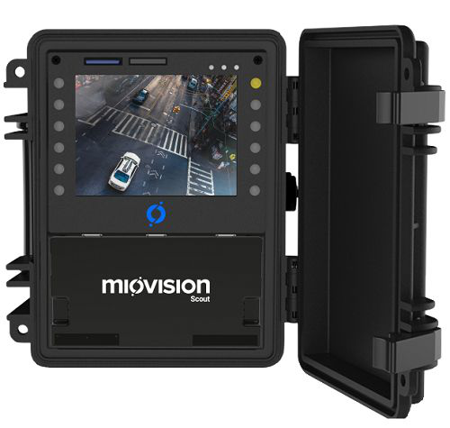
Scout battery specifications
Sealed Lead Acid (SLA) batteries can be affected by ambient temperature, charging patterns, and usage behavior.
- Scout VCU: 12V, 14Ah SLA battery (Specification Sheet)
- Power Pack: 12V, 9Ah SLA battery (Specification Sheet)
Prior to March 30, 2020 (valid for Europe): Replacement Batteries were 12V, 13Ah SLA (Spec sheet – English, Spec sheet – German).
If purchasing new batteries, Miovision recommends the PowerSonic brands linked above. A non-PowerSonic battery with matching specs can be substituted, but Miovision can't guarantee it will match the recording/standby times below.
Battery recording time
- Scout VCU: 72 hours (3 days)
- Scout VCU + Power Pack: 164 hours (7 days)
Estimated recording times assume optimal ambient temperature and batteries charged and maintained following Miovision's best practices (see Charging and maintaining Scout batteries).
Battery standby time
Scout VCU: 60 days. The VCU operates in Standby mode when not recording, which impacts overall recording time and battery level over time — the Power Pack has no standby state, but still loses some voltage over time in storage. When storing either unit for an extended period, charge it at least every 30 days to keep the batteries at a reference charge.
A Scout Control Unit loses about 1 hour of recording capacity for every 100 hours spent in standby.
Temperature impact
| Temperature | Battery capacity |
|---|---|
| 104°F (40°C) | 102% rated capacity |
| 77°F (25°C) | 100% rated capacity |
| 32°F (0°C) | 85% rated capacity |
| 5°F (−15°C) | 65% rated capacity |
SD card technical specifications
The industrial-grade Ultra SD card Miovision sells for the Scout VCU:
- Storage Technology: Ultra MLC
- Class Rating: Class 10
- Temperature Rating: −40°C to +85°C
- Storage Capacity: 16 or 32 GB (each SD slot on Scout supports up to 32 GB)
Industrial-grade cards offer superior write endurance over consumer-grade cards. If buying locally, choose a card that meets or exceeds these specs.
Tripod specifications
- Weight: 30 lbs (12 kg)
- Box Dimensions: 51.57" x 9.84" x 10.24" (131 x 25 x 26 cm)
- Stance: 6.5 ft (2 m)
- Collapsed Height: 4 ft (1.2 m)
- Security Weights: 40 lbs (18.1 kg) × 3
- Maximum Wind Load: 50 mph (80.5 km/h)
- Maximum Grade of Hill: 40% (approximately 21°)
Scout operating parameters
▶ Video: Scout Specifications and Maintenance
| Deployed Height | ~20 ft (6 m) + the height at which you mounted the bracket |
| Temperature Range | −40°F (−40°C) to 140°F (60°C) |
| Maximum Wind Load | 50 mph (~80.5 km/h) |
| Day/Night | Camera rated for 0.03 lux — usable for 24-hour studies |
| Weather | Operates in rain, sleet, heat, and snow |
| Field of View | 90° horizontal and vertical |
| Video Resolution | 720 × 480 pixels |
| Max. Battery Life | 72 hours of continuous use |
| Battery Recharge Time | ~24 hours |
| Memory Types Accepted | SD Memory cards (incl. SDHC) |
Max. recording time by card size (see SD card capacity for full detail including Low Bit Rate mode):
| Card Size | Standard Quality | High Quality |
|---|---|---|
| 2 GB | 11 hours | 2 hours |
| 4 GB | 22 hours | 4 hours |
| 8 GB | 45 hours | 8 hours |
| 16 GB | 90 hours | 17 hours |
| 32 GB | 182 hours | 35 hours |
Scout serial numbers
You may need a component's serial number when reporting a hardware issue or ordering replacement parts.
| Component | Serial number format | Location |
|---|---|---|
| Camera | Begins with "SCA" + 3 alphanumeric characters | On the camera connector cable |
| Pole Mount | Begins with "SPM" + 3 alphanumeric characters | On the Pole Mount mounting bracket |
| Scout Control Unit | Begins with "SCU" + 3 alphanumeric characters | Inside the Control Box door, and in the Information Bar along the top of Scout's screens |
| Power Pack | Format may vary | Top right corner of the Power Pack faceplate |
| Scout Connect | Begins with "CNA" | Back of the Connect Adaptor |
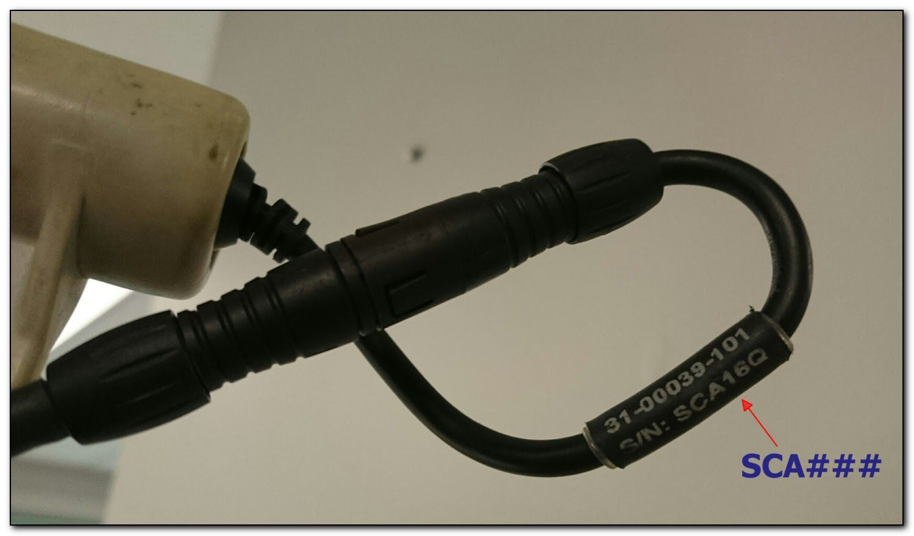
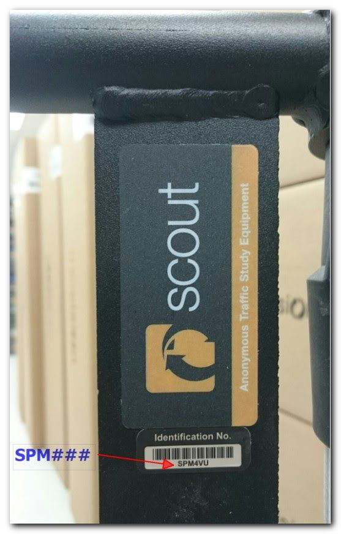
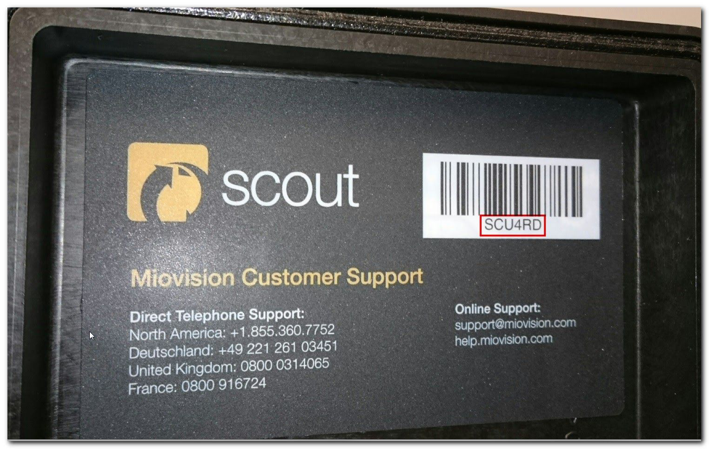
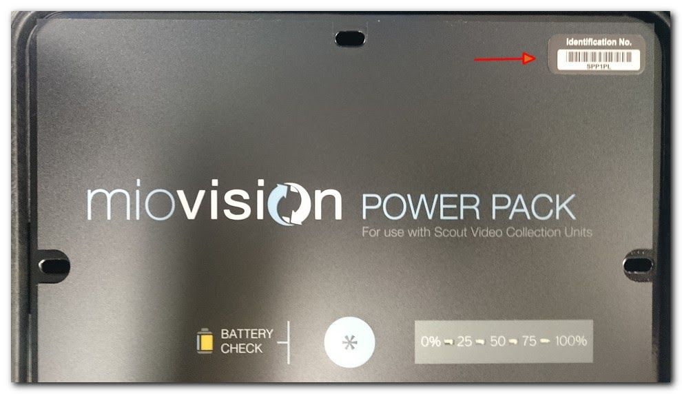
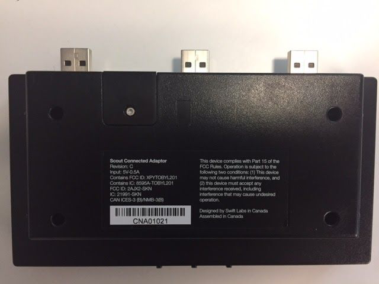
Getting started with Scout
Package contents
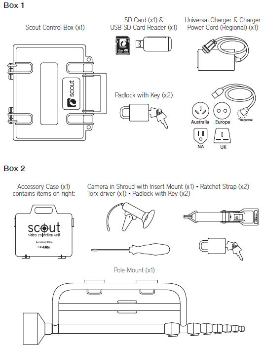
Box dimensions
- Scout Control Unit (SCU): 30 x 33 x 30 cm / 11.81" x 12.99" x 11.81"
- Pole Mount: 137 x 36 x 20 cm / 53.94" x 14.17" x 7.87"
- Travel Case: 142 x 41 x 36 cm / 55.9" x 16.14" x 14.17"
Weight
- Scout Control Unit (SCU): 12.7 kg / 28 lb
- Pole Mount: 12.7 kg / 28 lb
- Travel Case: 15.9 kg / 35.05 lb
Use the Scout Demo checklist as a guide for repacking all components if you received Scout as part of the demo program.
Scout safety instructions
Always follow these recommendations when deploying and using Scout.
- Securely fasten and tighten the clamps when deploying the Mast — sections shouldn't rotate once clamped
- Securely fasten and lock all components
- The Pole Mount can be deployed off the ground for added security against tampering — fully tighten the ratchet straps if doing so
- For extra security, a chain and lock can secure the Pole Mount (not included)
- Be mindful of overhead obstacles — never deploy where power lines or transformers could contact the extended Mast
- Ensure the Pole Mount is tightly secured before extending/retracting the Mast, or mounting Scout/a Power Pack on the bracket
- Never deploy the Pole Mount in a lightning storm, or when lightning is forecast
- Scout is watertight only when the door is securely closed — opening it in inclement weather can damage the electronics
- Avoid disassembling Scout unless instructed by a Customer Support Representative
- Never touch or tamper with the internal components
Exploring the Scout user interface
Environment: Scout Firmware 14.0+. When Scout boots up, you'll see the home screen (the Schedule screen).
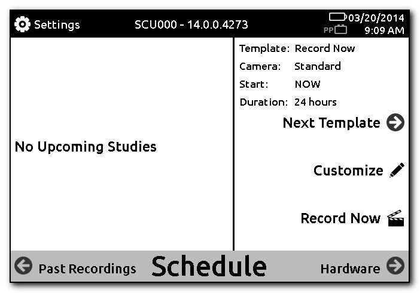
Information Bar
The black Information Bar along the top of every screen shows the page title, the Settings icon, the current date/time, and the VCU ID.
- The on-screen Battery Indicator shows overall battery level, flashing red when a recharge is needed. Battery behavior is also reflected in the faceplate LEDs — see LED States.
- The Settings icon links to Diagnostics, Battery, and Storage screens, plus date/time and LCD settings. From Settings you can also edit templates, set the timestamp, and update your firmware.
Navigation Bar
The grey Navigation Bar along the bottom of every screen moves between the three main screens:
- Schedule (home) — view, edit and customize any of the five included templates, or select Record Now to begin recording instantly; also shows upcoming studies.
- Hardware — links to Battery Information and Storage checks, plus Camera Check for a live video feed and connectivity confirmation.
- Past Recordings — review details of past recordings, including duration and status.
SD card capacity
The duration of video that fits on an SD card can only be estimated — storage capacity is impacted by the scene being captured. Formatting the card before each recording maximizes available capacity, so it's best practice to always format your SD card on Scout.
These aspects of a scene raise storage requirements: complex patterns, intense bright or white light/reflection, and a large amount of movement (including ambient movement like leaves in the wind). Storage needs are generally higher when each frame differs a lot from the one before/after it.
Storage capacity
Storage capacity can only be estimated; Miovision cannot be held liable for factors resulting in an incomplete recording. Estimates below assume optimal equipment maintenance/conditions and these average file sizes:
- Low Bit Rate Video: 70 MB/hour
- Normal Video: 180 MB/hour
- High Quality Video: 900 MB/hour
Don't use High Quality mode for video you'll submit for processing — it takes up to 5 times longer to upload. See Video Recording Modes for more.
Scout supports SD cards up to 32 GB per slot; 64 GB cards (and higher) are not supported. As a best practice, always deploy Scout with a card in each slot.
| Card Size | Low Bit Rate | Normal Quality | High Quality |
|---|---|---|---|
| 2 GB | 27 hours | 11 hours | 2 hours |
| 4 GB | 56 hours | 22 hours | 4 hours |
| 8 GB | 113 hours | 44 hours | 8 hours |
| 16 GB | 227 hours | 88 hours | 17 hours |
| 32 GB | 456 hours | 177 hours | 35 hours |
| 2 × 32 GB | 913 hours | 354 hours | 70 hours |
Inserting or ejecting the Scout SD card
Always put Scout in standby mode first:
- Press the yellow button once.
- Press the Sleep button.
- Insert or remove an SD card.
Deploying Scout with SD cards in slots A and B
Even if your recording doesn't need the capacity of both cards, deploy Scout with SD cards in Slot A and B — if a technical issue affects one card, Scout records to the other.
Firmware updates, including Over-the-Air updates, require a functioning SD card in Slot A.
Deploying Scout at the intersection
Power Pack safety instructions
- Don't put weight on the Power Pack after it's deployed on the bracket
- Don't position it so that it could fall into the roadway or sidewalk
- Don't deploy it when wind speed exceeds 50 mph, or in other extreme weather
- Don't remove the battery from inside the Power Pack without first contacting Customer Support
- Don't touch exposed battery leads or circuitry
- Don't get the electronics wet
Scout deployment guidelines
Fully capturing all approaches and movements is key to complete, accurate data. Miovision Specialists rate deployments to convey expected accuracy and help you improve future ones. Miovision also offers free deployment planning — email location details to support@miovision.com, ideally a week before your planned deployment, especially for larger multi-location projects.
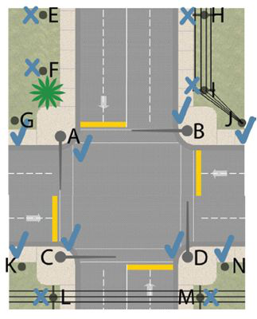
Distance from roadway
- Position Scout within 12 ft (4 m) of the roadway or intersection being recorded
- Bare structures are ideal — avoid structures with obstacles under 20 ft (6 m)
- Make sure trees or other objects don't obstruct Scout's view of the intersection
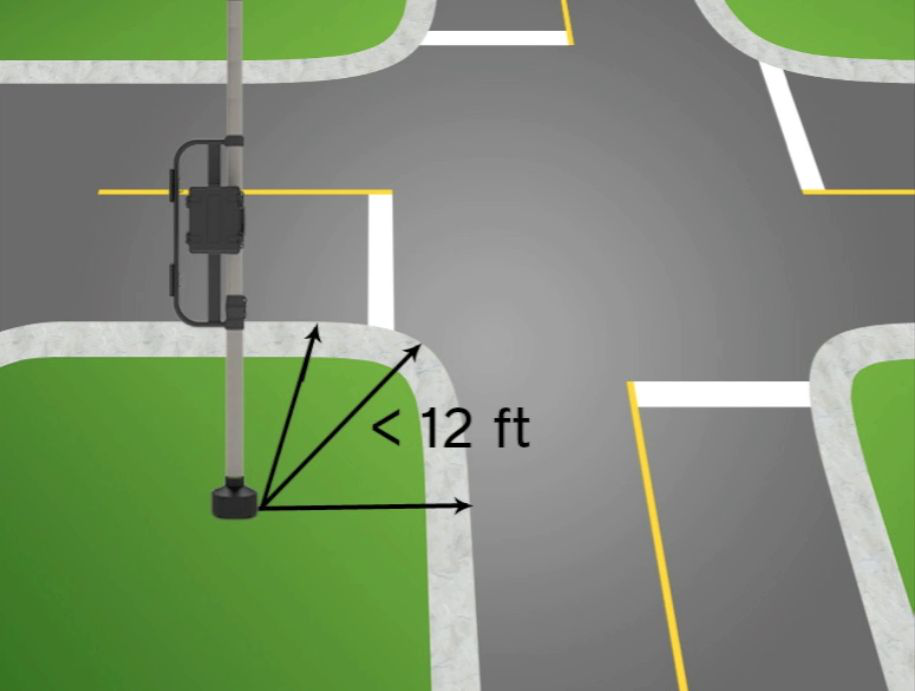
Viewing distance of camera
- Vehicle movements within 175 ft (53 m) of Scout can be accurately processed
- ATR study: up to 4 lanes (lane-separated) or 6 lanes (direction/volume only) per Scout
- TMC study: up to 6 lanes per approach, per Scout
- Pedestrian and Bicycle study: all movements/approaches must be within 125 ft (38 m) — see Pedestrian and Bicycle Studies
If movements or lanes are farther than 175 ft (53 m) from Scout, deploy multiple Scouts.
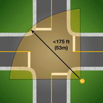
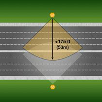
Pole Mount height and camera angle
- Always fully extend the Pole Mount to capture a full view of the intersection/roadway
- Run a Camera Check from the Hardware screen to angle the camera for a full view
Storage and battery considerations
- Set Video quality to Normal with 2 × 32 GB SD cards to help ensure adequate storage
- Before leaving your facility, run a battery check to confirm Scout's batteries are in good working order
Glare from sun or streetlights
- Where possible, don't face the camera directly toward the horizon during sunrise/sunset
- Instead, orient the camera along a North/South viewing axis
- Avoid positioning Scout so it directly faces a streetlight
Scout training videos
Every training video referenced throughout this guide, gathered here for quick access:
Preparing to use Scout
Performing a battery capacity test on Scout
The capacity test lets Scout recalibrate its battery capacity estimate. Because capacity is affected by usage, charging patterns, and temperature, run it ahead of each count season (Fall/Spring), or at least twice a year — and any time you get a Charge Temperature or Long Charge warning.
- Fully charge Scout, then disconnect it from the charger.
- On Scout, press Hardware > Battery Check > Advanced > Run Capacity Test.
- The test takes up to 72 hours, depending on battery health. Scout shows a running progress bar during the test.
It's normal for Scout to show 0% progress for as long as 24 hours after starting the capacity test — that's actually a sign of good battery health.
After the test completes, Scout shows a colored indicator next to the battery icon, estimating hours of regular recording the batteries can support:
| Color | Meaning |
|---|---|
| Green | > 48 hours |
| Amber | Between 24–48 hours |
| Red | < 24 hours |
After the capacity test completes, fully recharge the batteries.
Viewing Scout's battery capacity
Once Scout is fully charged, view its battery capacity via Hardware > Battery Check.
Capacity test warning
When new batteries are installed, or the faceplate is changed, Scout prompts you to run the capacity test. If you skip it, Scout keeps estimating based on the old batteries' capacity. You can start the test straight from the warning screen by pressing Run Test.
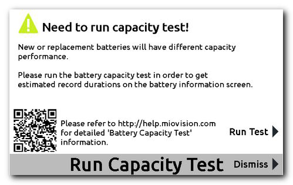
Charging and maintaining Scout batteries
Scout and the Power Pack both use Sealed Lead Acid batteries. Follow these recommendations to extend battery life and prevent damage.
Battery charging best practices
- Let Scout cool down after recording in hot temperatures (above 30°C/86°F) — charging already-hot batteries shortens their lifespan
- Charge Scout as soon as possible after a deployment
- Dismount Scout from its deployed position to charge (don't charge upside down)
- Keep the VCU door open while charging
- Safe to leave connected 12–24 hours after the charger LED turns green (extends battery life) — don't leave it > 24 hours after the LED turns green
- Fully charge Scout every 30 days if unused, to maintain a safe battery level
- Run the capacity test ahead of each count season, or a minimum of twice a year
Undercharging lead-acid batteries causes plate sulfation — sulfuric acid reacting with the plates to form lead sulfate crystals — which reduces the battery's ability to accept a full charge and gets worse over time, leading to premature failure.
▶ Video: Scout Specifications and Maintenance
Battery charging behavior
- The charger operates in three modes: Constant Current, Constant Voltage, and Trickle Charge
- Constant Current: rapidly recharges batteries to about 80% full
- Constant Voltage: slowly charges to nearly full
- Trickle Charge: tops batteries up to full
- The charger LED turns green in Trickle Charge mode*
- Scouts with a Rev2+ faceplate and firmware 14.3+ have a circuit that auto-stops charging if there's risk of overcharge/damage — in this case Scout can stay connected indefinitely. Check the faceplate version on Scout's Settings screen (Scout VCU REV).
- The charger and Scout will feel warm while charging — this is expected**
*When the LED first turns green, batteries aren't yet at full capacity —
leave the charger plugged in another 12–24 hours to complete Trickle Charge and let
the batteries equalize.
**If the charger or Control Unit are hot to the touch (you can't leave your hand on them
for more than 1 second), disconnect from power immediately.
Charger warnings
Under certain conditions Scout displays a Charge Temperature or Long Charge warning. If this happens, first run a capacity test, then download logs and send them to Customer Support for analysis.
Troubleshooting battery issues on Scout
If batteries are overcharged or short-circuited they might start to leak or swell — replace them immediately. See Battery Specifications for purchase recommendations. Power Sonic batteries: see the Power Sonic Technical Manual for care instructions.
See Troubleshooting: Scout battery charging issues for more.
Setting up Scout at the intersection
Planning the Scout setup
- Charge Scout and Power Pack (if required) — review LED States. While charging, the charger LED is orange/red; fully charged is green.
- Insert an SD card — ensure it's fully seated and run a Storage Check to confirm enough space is available. Best practice: format cards between deployments.
- Schedule a recording — review Scout's interface. Templates are included and can be edited, or start recording on location (see Scheduling studies). Recording longer than 72 hours requires a Power Pack — see the Power Pack User's Guide.
▶ Video: Deploying Scout Hardware
Setting up the Scout on location
-
Choose a deployment site.
- Deploy within 12 ft (3.6 m) of the intersection/roadway corner
- Make sure nothing obstructs the Camera's view
- No overhead obstacles lower than 25 ft that the Camera or Mast could contact
- Scout captures movements <175 ft (53 m) away — up to 6 lanes (volume only) / 4 lanes (lane-separated) per VCU for an ATR study; see VCU Deployment Guidelines
- If no suitable location is available, a Tripod may be required — see Tripod User Guide
-
Attach Pole Mount to Pole/Tripod.
- Extend the bottom Mast section so the bracket sits at shoulder height when resting on the ground (skip if deploying off the ground)
- Securely fasten the clamp so the section stays extended
- Hold the Pole Mount against the pole so the rubber bumpers sit flush against it
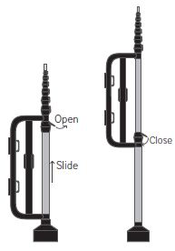
Open/slide the bracket into place, then close the clamp. -
Run both Ratchet Straps through the bracket and around the pole/tripod, and securely fasten.
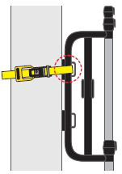
Fastening a ratchet strap. 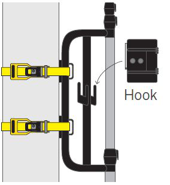
Both straps fastened, with the cable Hook. -
Attach Scout to the Pole Mount bracket.
- Line up Scout's rear sleeve with the mounting bracket arms on Pole Mount
- Scout's connectors should face away from the Mast / toward the pole
- A Power Pack can mount on the opposite bracket, if needed
- Attach cables to Scout. Line up the pins and plug the video cable into the Video In connector.
-
Plug the Power Pack cable into the Charger/Power Pack connector if required. Hand-tighten
both fastening rings.
Don't over-tighten
Never use a tool to tighten the connector rings — this can damage the connectors or cables.
-
Attach the camera to the Mast.
Old camera mount: Screw the Camera onto the top of the Mast until hand-tight, ensuring it's threaded on straight. Adjust the Camera head to roughly a 45° angle, remove the lens cap, and line up the white lines on the Camera and Mast connectors to plug it in.
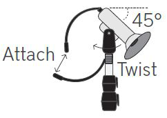
Attach and twist the camera to ~45°. New Camera Mount: Insert the Camera Mount into the top of the Pole Mount, move the thumb lever to its locked position, and connect the Camera cable to the Pole Mount cable.
-
Extend the mast.
- Open the lever only to the point of tension to loosen the top-most clamp
- Extend the top Mast section as far as it goes — don't over-extend
- Close the lever to tighten the clamp, then test-turn the section by hand — it shouldn't move
- If needed, tighten further by turning the fastening nut counter-clockwise
- Repeat for each Mast section — the last 2 sections use a torx driver to loosen/fasten
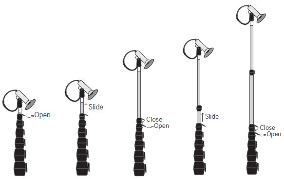
Extending the Mast one section at a time: Open → Slide → Close. TipMake angle/direction adjustments before extending the Pole Mount as much as possible, to minimize stress on the cable. This gets easier with experience — only make minor adjustments once the Pole Mount is fully extended.
-
Verify the hardware setup. Boot up Scout — any scheduled studies
appear under Upcoming Studies. From the Hardware screen:
- Battery Check — shows capacity for internal and Power Pack batteries (if connected); warns if there's not enough power for upcoming studies
- Camera Check — live video feed; adjust the viewing angle/direction so the full study location is in view
- Storage Check — confirms enough SD capacity for upcoming studies; press Format to erase existing video/data
-
Secure the Pole Mount. Padlock Scout's door and the Pole Mount bracket,
use the keys to lock the Ratchet Straps, and optionally add a third padlock and chain
(not included) for extra security.
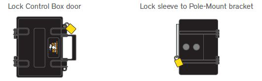
Lock the Control Box door and the bracket sleeve.
Taking down the Scout
- Unlock Scout and stop the recording. Always confirm recording has stopped before disconnecting cables or ejecting SD cards — if recording is still in progress, press Stop on the Live Recording screen.
- Retract the mast. While holding the Mast, loosen the bottom clamp and slowly guide it down, tightening each section before loosening and retracting the next.
- Remove the camera from the mast. Disconnect it, cap the lens, and unscrew/lift it off the top of the Mast.
- Remove Scout (and Power Pack) from the bracket. Unscrew all cables, cap the connectors, remove the bracket-sleeve locks, and lift Scout off the bracket onto the ground or into the travel case.
- Remove the ratchet straps. Unlock both straps; to loosen one, pull the middle lever fully toward the handle to release the ratchet mechanism, then pull the ratchet away from the pole while holding Pole Mount secure (to avoid it falling into traffic).
- Lower the bottom section of the mast. Loosen the lever beneath the bracket, lower the bottom section until fully retracted, then close the lever to secure the clamp.
Setting up the Scout Tripod (optional)
The Scout Tripod is an accessory for deployments where no standalone structure is available.
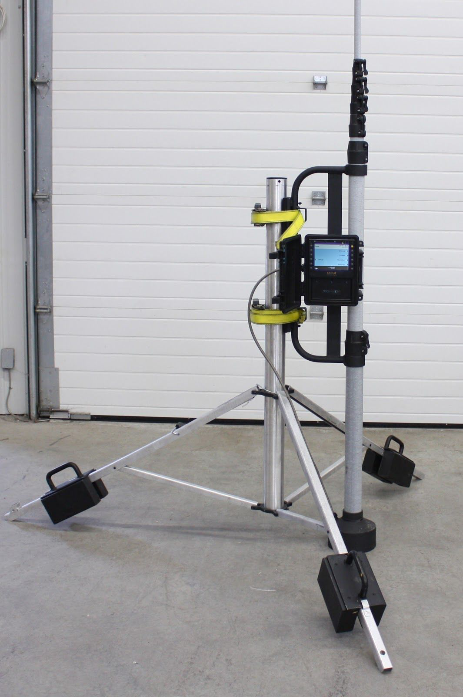
Setting up in an ideal location
- Select an appropriate location — review the deployment guidelines above; find an area as flat as possible. If you must use a slight hill/incline, keep the grade under 40%/21° (see Setting up on an incline).
- Extend the legs — pull them from the bottom, stand the Tripod up, remove the Velcro strap, and pull the legs away from the center column until fully extended. Latch and lock all three locking clips on the center column.
- Attach the weights — secure the Tripod in its deployed state, line up one weight
per leg with its white plastic bracket, and lock both latches on each weight.
Tip
Latch the upper latch first — it sets the weight in the correct place and makes the bottom latch easier.
- Attach the Scout to the Tripod — confirm the weights are properly installed and the frame is stable, position the Polemount bracket against the center column so the rubber feet sit flush, then attach it and proceed per the deployment steps above.
Setting up on an incline
- Select a location where the surface grade is under 40%/21°, at a safe distance from the roadway/sidewalk.
- Position the Tripod so two of the extended legs sit on the upper end of the hill, roughly aligned with the plane of the hill.
- Attach the weights the same way as on flat ground.
- Set up the Scout Polemount opposite the lower leg. Adjust the camera before fully extending the mast, so the roadway stays level in the video.
Taking down the Tripod
- Fully retract the Scout mast, then detach Scout from the Tripod. Remove the ratchet straps while holding the bracket and column in place; if the bottom Polemount mast was unlocked, lock it during take-down.
- Unlock the weights and carefully lift them off each leg.
- Unlock the column locks and collapse the legs in toward the center column.
- Re-attach the Velcro strap around the legs for secure transport.
Tripod safety instructions
- Ensure the Scout Polemount is tightly secured to the center column
- Leave the bottom extension of the Scout Polemount unlatched when the Tripod is on uneven ground
- Make sure the Tripod is stable before attaching Scout
- Make sure the weights are locked onto the legs
- Don't set up the Tripod on unstable surfaces like rocks or loose soil
- Don't move the Tripod while Scout is attached and extended
- Don't set up the Tripod with the Scout Polemount extended over the road or walkways
Performing a Scout camera check
Camera Check shows a live feed of Scout's camera view. Run it every time you deploy Scout, to confirm the camera is connected and correctly angled.
- From the Home/Schedule screen, press Hardware.
- Press Camera Check.
If the live feed doesn't appear, see Troubleshooting Video Issues on Scout.
▶ Video: Scheduling and Hardware Checks
Adjusting the Scout camera orientation
If the live feed isn't aligned horizontally:
- Use a blunt object to push the camera out of its shroud (careful not to damage the lens).
- Connect the camera to Scout, then go to Hardware > Camera Check.
- Adjust the camera until the video is level.
- Reinsert the camera into its shroud at the correct orientation.
Preventing camera movement during recording
With the original threaded mount, the camera attaches to the Pole Mount via a right-handed thread; its video cable then connects to the cable extending from the Pole Mount. Depending on how the cables are wound, torque applied against the thread can gradually shift the camera and degrade video capture. This doesn't happen with the current insert-mount design.
To avoid it: make sure any torque on the camera runs clockwise (facing the camera), and connect the cables around the right-hand side of the camera body.
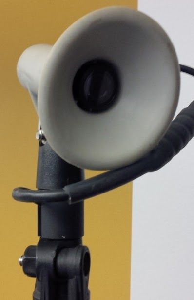
Using Scout
Scheduling studies
Schedule studies before deploying, based on templates. Scout includes five preset templates you can customize, plus the Record Now template.
- From the Home/Schedule screen, press Next Template to scroll through
templates. With the one you want selected:
- Press Add to Schedule to use it unchanged, or
- Press Customize to adjust date, start time, and/or duration, then Add to Schedule.
- Once added, the study appears under Upcoming Studies on the left of the Home/Schedule screen.
▶ Video: Scheduling and Hardware Checks
Using a time/date stamp on Scout
Add a time/date watermark to all recorded video for easier, more accurate auditing:
- From any main screen, go to Settings.
- Select Recorder.
- If Timestamping shows Disabled, select + or − to enable it (same control disables it if already enabled).
Editing a schedule template
- From the Home screen, press Settings.
- Press Schedule Templates.
- Scroll to the template and press Edit.
- Make the required changes.
- Press Save.
Editing a scheduled study
- From the Home/Schedule screen, scroll to the study (press More if it's not shown).
- Press Edit next to the study and make your changes.
- Press Save Changes.
Deleting a scheduled study
From the Home/Schedule screen, scroll to the study — if it's on screen, press Edit then Delete; if not, press More, select the study, then Delete.
Checking batteries
Run Battery Check before deploying, to confirm there's enough power (internal + Power Pack, if connected) for upcoming studies.
- From the Home/Schedule screen, press Hardware.
- Press Battery Check.
Battery Check only confirms enough power for scheduled studies after a Capacity Test has been run on the unit.
Performing a camera check
- From the Home/Schedule screen, press Hardware.
- Press Camera Check.
If the live feed doesn't appear, see Troubleshooting Video Issues on Scout.
Performing a storage check
Run Storage Check before deploying, to confirm enough space for upcoming studies.
- With the SD cards you intend to use in place, from the Home/Schedule screen press Hardware.
- If there's video or other files from a previous study, press Format to clear the card.
- Press Storage Check (or Check Again if you already ran it). If more space is needed and Slot B is empty, insert a card there and press Check Again.
Format SD cards between recordings — it maximizes available space and ensures the correct format. See SD card storage limits for more.
Editing Scout templates
Scout's five preset schedule templates can be customized.
Edit templates
- From any main screen, go to Settings.
- Press Schedule Templates.
- Press Edit.
- Scroll with + and − to edit schedule details.
- Press Save.
Edit templates with Record Now feature
- From the Home/Schedule screen, press Customize.
- Scroll with + and − to edit schedule details.
- Press Record Now.
Using the Record Now template on Scout
Record Now begins recording immediately at the deployment site. See the Record Now article for more.
Record Now without the Scout Connect
The default duration is 24 hours.
- To modify the duration, press Customize.
- From the Home/Schedule screen, press Record Now.
Record Now with the Scout Connect
- From the Home/Schedule screen, press Record Now — you're prompted to allow remote management.
- Press Yes, Heartbeat only (2 min wait) or Yes, Heartbeat with Position (5 min wait) to enable it. See Remote Schedule Management for more.
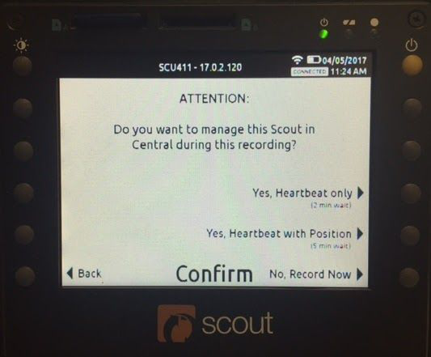
Depending on the option chosen, it can take 2–5 minutes to send a Heartbeat to DataLink; if a GPS position can't be acquired, Scout sends a Heartbeat only. Recording begins once the heartbeat is sent, and continues sending one every hour (coinciding with the hour or half-hour) during recording.
Recording consecutive studies
Traffic Data Online won't accept a video file over 100 hours. Work around this by scheduling long-duration recordings as multiple shorter consecutive recordings — e.g. for a 7-day study, schedule one 4-day (96 hour) recording plus one 3-day (72 hour) recording. This produces separate files with no time gap between them, and avoids recordings being split arbitrarily across SD cards. Upload each file as a separate study in TDO, then merge the studies into one report once processing completes.
Video recording modes on Scout
| Mode | Bitrate |
|---|---|
| Normal | 384 kbps (48 KB/s) |
| High Quality | 2 mbps (250 KB/s) |
| Low Bit Rate (black and white) | 150 kbps (18.75 KB/s) — requires Scout Firmware v18.0.5.382+; see Release Notes |
For long-duration studies or video you'll submit for processing, use Normal or Low Bit Rate. High Quality video submitted to Miovision takes up to 5× longer to upload and is automatically converted to Normal quality for processing/storage — High Quality is better suited to observational collection, study auditing, and sample videos for clients. The mode you choose affects how much video fits on your SD card (see SD card capacity).
- From any main screen, go to Settings.
- Press Recorder.
- Press + / − to switch modes.
- Press Save.
Enabling or disabling time/date stamps on Scout
- From any main screen, go to Settings.
- Select Recorder.
- Select + or − next to Timestamping to toggle it on/off.
Managing date and time settings on Scout
How you manage date/time depends on whether your unit has Scout Connect. With Connect, Date and Time settings are disabled — time is set by the Time Zone setting and GPS when automatic mode (the default) is enabled. To set the time zone manually:
- Go to Settings.
- Press Date & Time.
- Press Timezone Mode.
- Press OK to acknowledge the warning.
- Press Time Zone, then select the continent and the new time zone.
Scout Connect and time zone changes
Scout with Connect needs no manual DST adjustment — time zone and system time update automatically. If you schedule a study in one time zone and then change Scout's time zone setting, the originally scheduled time is preserved (e.g. an 8 a.m. Eastern start stays 8 a.m. Eastern / 7 a.m. Central after switching to Central). See Miovision Scout Connect and time zone changes.
Managing date and time settings on Scout without Connect
Without Connect, manage all date/time settings manually:
- Go to Settings > Date & Time.
- To adjust the Date: select Date, scroll with + / −, press Save.
- To adjust the Time: select Time, scroll with + / −, press Save.
- To adjust the Time Zone: select Time Zone, then the continent and new zone.
Scout's time settings have no seconds field — pressing Save resets seconds to zero. To set the time to the second, set it one minute ahead and press Save right as the minute changes.
Scout without Connect and time zone changes
Scout without Connect doesn't auto-update its time zone for DST — if your region observes DST, update the time zone setting manually. Updating it adjusts the system time accordingly.
Confirming whether Scout time has skewed
As Scout's RTC clock battery depletes, its set time can skew. To check: enable the timestamp if it isn't already, perform a test recording, and note the timestamp (shown to the second). See RTC clock battery for replacement info, or enable the timestamp if needed.
Resetting Scout to factory settings
Factory Reset clears all templates and preferences — useful when setting up for a new project/study type/count season, or when directed during troubleshooting.
Once templates are wiped from Scout, they cannot be retrieved — be sure before performing this. As part of regular maintenance, you don't need to run this at the start of a count season unless you actually want to delete all existing templates.
- On Scout, go to Settings > Diagnostics > Factory Reset.
- Press Yes to complete the reset.
Formatting an SD card on Scout
Formatting regularly allows maximum storage capacity — always format your SD card on Scout.
- Insert an SD card into Slot A. (Always ensure Scout is in standby mode first — press the yellow button once, then Sleep.)
- From the Home/Schedule screen, press Hardware.
- Press Storage Check.
- Press Format.
- Formatting removes all files from the card — press Yes to proceed, or No to back up files first.
Scout confirms once formatting is complete.
Formatting an SD card on a Windows computer
Set the File system to FAT32. If you choose another format, Scout won't recognize the card.
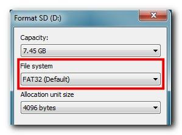
Swapping a Scout SD card
Scout's display doesn't indicate which card it's currently recording to. To replace a card mid-study:
- Stop the recording.
- Put Scout to sleep (press the yellow button once, then Sleep).
- Remove the card you want to replace and insert the new one.
- Start Scout by pressing the yellow button.
- Start the recording.
With a card in both Slot A and Slot B, Scout picks which to record to using this logic:
- If the estimated recording size fits the open space on Slot A, record to Slot A
- If it's larger than Slot A's open space but fits Slot B, record to Slot B
- If it's larger than both cards' open space, record to Slot A
- If either card fills up or becomes unavailable mid-recording, switch to the other card if space allows
Scout SD card capacity requirements by recording duration
Estimates — actual file size varies with what the video captures. Format the card on Scout before starting your study to ensure its full capacity is available. See Replacing Scout SD cards for recommended cards.
| Study Length | Scout VCU | Scout VCU + Power Pack |
|---|---|---|
| 8 hours | 2 GB | 2 GB |
| 12 hours | 4 GB | 4 GB |
| 24 hours | 8 GB | 8 GB |
| 36 hours | 8 GB | 8 GB |
| 48 hours | 16 GB | 16 GB |
| 72 hours | 16 GB | 16 GB |
| 96 hours | N/A | 32 GB |
| 120 hours | N/A | 32 GB |
| 144 hours | N/A | 32 GB |
| 168 hours | N/A | 32 GB |
Downloading Scout log files
- Insert an SD card with at least 100 MB of free space into Slot A.
- Go to Settings.
- Press Diagnostics.
- Press Download Logs.
Log files are saved to the root folder of the SD card.
Source & document history
Converted from Miovision's official Scout User Guide PDF
(v1 - scout user guide.pdf), version 1 – Jan 04, 2021 (initial
version). All product names, screenshots, and diagrams are © Miovision
Technologies Incorporated; this page is a personal, non-redistributed reformatting for
easier reference and is not an official Miovision publication.